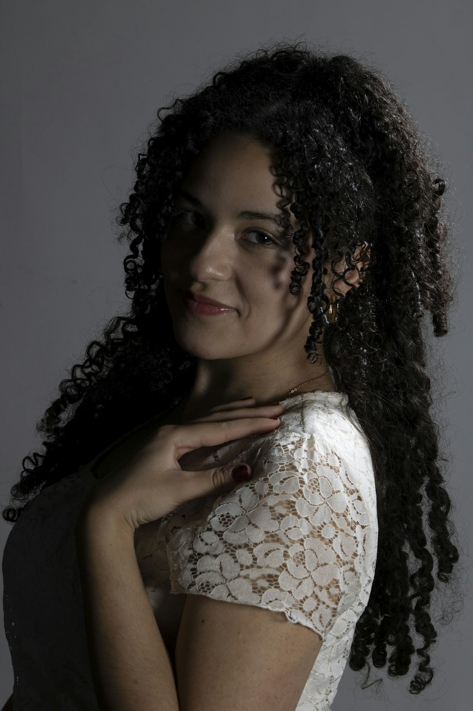
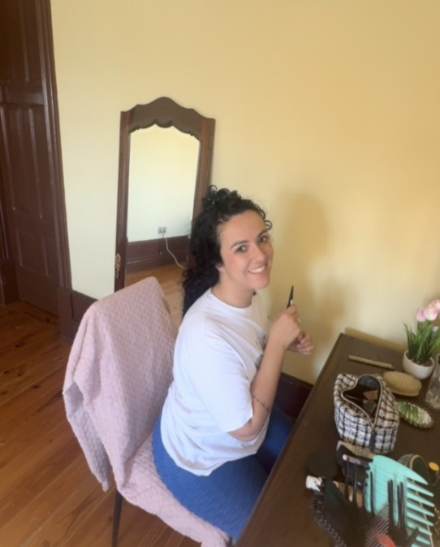

Conversa
Começamos por conhecer o teu cabelo: tipo de curvatura, porosidade, histórico e o que gostavas de mudar.
Especialista em cabelos com curvatura
Curvatura natural com tratamento VIP. Técnica, cuidado e confiança feitos à medida do teu padrão — porque o teu cabelo não precisa de ser domado, precisa de ser entendido.
Cachos definidos em espiral. Pedem corte cacho a cacho e muita hidratação.

Serviços
Toca num serviço para veres do que se trata. Serviços ilustrativos: a lista final, os detalhes e os valores são confirmados com a Filipa.
Como funciona
Começamos por conhecer o teu cabelo: tipo de curvatura, porosidade, histórico e o que gostavas de mudar.
Trabalhamos o cabelo no seu estado natural, cacho a cacho, com o cuidado certo para ti.
Sais com o cabelo definido e com um plano simples para o manteres bonito no dia-a-dia.
Trabalhos
Fotografias ilustrativas de banco de imagens gratuito (Unsplash). O “antes & depois” vem do Instagram da Filipa; na versão final entram os trabalhos reais. A adequação de cada técnica ou tratamento depende sempre da avaliação do cabelo.

Por trás da Damn Curls
Acredito que cabelo com curvatura tem técnica própria, tempo próprio e uma beleza que não precisa de ser alisada para ser aceite.
Na Damn Curls cada cliente é tratada como um trabalho único: ouvimos, observamos o teu padrão natural e criamos um resultado que combina contigo — e que consegues manter em casa.
Texto ilustrativo — a biografia real será escrita com a Filipa.
Marcações
Escolhe o que procuras, escreve o teu nome e vê como seria a mensagem. Na versão final, o pedido segue diretamente para a Filipa.